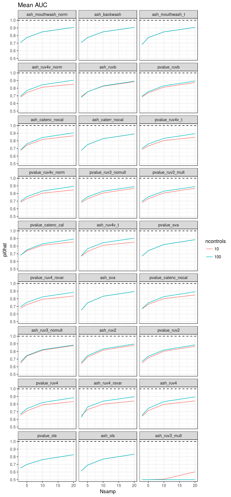

Read in estimates of \(\pi_0\) and calculate mean of estimates of \(\pi_0\).
library(dplyr)##
## Attaching package: 'dplyr'## The following objects are masked from 'package:stats':
##
## filter, lag## The following objects are masked from 'package:base':
##
## intersect, setdiff, setequal, unionpi0hat <- read.csv(file = "../output/sims_out/pi0_mat2.csv")
pos_bad <- grep(names(pi0hat), pattern = "auc") # some columns accidently have auc instead of pi0hat
pi0hat <- select(pi0hat, -pos_bad)
mean_dat <- pi0hat %>%
dplyr::select(-current_seed, -poisthin) %>%
dplyr::group_by(nullpi, Nsamp, ncontrols) %>%
dplyr::summarise_each(funs(mean))
names(mean_dat) <- stringr::str_replace(names(mean_dat), pattern = "pi0_", replacement = "")Order columns by mse from truth of 0.9.
colorder <- order(apply(mean_dat[, -(1:3)], 2, function(x) {sum((x - 0.9)^2)}), decreasing = FALSE)
method_order <- names(mean_dat)[-(1:3)][colorder]
colorder <- c(1:3, colorder + 3)
data.table::setcolorder(mean_dat, colorder)Data table of results.
mean_dat_round <- mean_dat
mean_dat_round[, -(1:3)] <- round(mean_dat_round[, -(1:3)], digits = 2)
DT::datatable(mean_dat_round, extensions = 'FixedColumns',
options = list(dom = "t", scrollX = TRUE, fixedColumns = list(leftColumns = 3)),
rownames = FALSE)RUVB doesn’t do as well as MOUTHWASH and BACKWASH. But in terms of ASH methods, the only other one that does better than RUVB is RUV3.
library(ggplot2)
library(tidyr)
longdat <- gather(mean_dat, key = method, value = pi0hat, 4:ncol(mean_dat))
longdat$ncontrols <- as.factor(longdat$ncontrols)
longdat$method <- factor(longdat$method, levels = method_order)
ggplot(data = longdat, mapping = aes(y = pi0hat, x = Nsamp, color = ncontrols)) +
facet_wrap(~method, ncol = 3) +
geom_line() +
geom_hline(yintercept = 0.9, lty = 2) +
theme_bw() +
ggtitle("Mean Estimates of Pi0")rm(list = ls())
auchat <- read.csv(file = "../output/sims_out/auc_mat2.csv")
pos_bad <- grep(names(auchat), pattern = "mse") # some columns accidently have mse instead of auc
auchat <- select(auchat, -pos_bad)
mean_dat <- auchat %>%
dplyr::select(-current_seed, -poisthin) %>%
dplyr::group_by(nullpi, Nsamp, ncontrols) %>%
dplyr::summarise_each(funs(mean))
names(mean_dat) <- stringr::str_replace(names(mean_dat), pattern = "auc_", replacement = "")Order columns by mse from 1.
colorder <- order(apply(mean_dat[, -(1:3)], 2, function(x) {sum((x - 1)^2)}), decreasing = FALSE)
method_order <- names(mean_dat)[-(1:3)][colorder]
colorder <- c(1:3, colorder + 3)
data.table::setcolorder(mean_dat, colorder)Data table of results.
mean_dat_round <- mean_dat
mean_dat_round[, -(1:3)] <- round(mean_dat_round[, -(1:3)], digits = 2)
DT::datatable(mean_dat_round, extensions = 'FixedColumns',
options = list(dom = "t", scrollX = TRUE, fixedColumns = list(leftColumns = 3)),
rownames = FALSE)RUVB seems to do 4th or 5th best behind both mouthwash methods, backwash, and limma-shrunk/variance inflated ruv4. Interestingly, its AUC seems to be rather robust to the number of control genes used, unlike other control gene methods.
library(ggplot2)
library(tidyr)
longdat <- gather(mean_dat, key = method, value = pi0hat, 4:ncol(mean_dat))
longdat$ncontrols <- as.factor(longdat$ncontrols)
longdat$method <- factor(longdat$method, levels = method_order)
ggplot(data = longdat, mapping = aes(y = pi0hat, x = Nsamp, color = ncontrols)) +
facet_wrap(~method, ncol = 3) +
geom_line() +
geom_hline(yintercept = 1, lty = 2) +
theme_bw() +
ggtitle("Mean AUC")
sessionInfo()## R version 3.3.2 (2016-10-31)
## Platform: x86_64-pc-linux-gnu (64-bit)
## Running under: Ubuntu 14.04.5 LTS
##
## locale:
## [1] LC_CTYPE=en_US.UTF-8 LC_NUMERIC=C
## [3] LC_TIME=en_US.UTF-8 LC_COLLATE=en_US.UTF-8
## [5] LC_MONETARY=en_US.UTF-8 LC_MESSAGES=en_US.UTF-8
## [7] LC_PAPER=en_US.UTF-8 LC_NAME=C
## [9] LC_ADDRESS=C LC_TELEPHONE=C
## [11] LC_MEASUREMENT=en_US.UTF-8 LC_IDENTIFICATION=C
##
## attached base packages:
## [1] stats graphics grDevices utils datasets methods base
##
## other attached packages:
## [1] tidyr_0.6.0 ggplot2_2.2.1 dplyr_0.5.0
##
## loaded via a namespace (and not attached):
## [1] Rcpp_0.12.8 knitr_1.15.1 magrittr_1.5
## [4] munsell_0.4.3 colorspace_1.3-2 R6_2.2.0
## [7] plyr_1.8.4 stringr_1.1.0 tools_3.3.2
## [10] DT_0.2 grid_3.3.2 data.table_1.10.0
## [13] gtable_0.2.0 DBI_0.5-1 htmltools_0.3.5
## [16] yaml_2.1.14 lazyeval_0.2.0 assertthat_0.1
## [19] rprojroot_1.1 digest_0.6.11 tibble_1.2
## [22] htmlwidgets_0.8 evaluate_0.10 rmarkdown_1.3
## [25] labeling_0.3 stringi_1.1.2 scales_0.4.1
## [28] backports_1.0.4 jsonlite_1.2This site was created with R Markdown